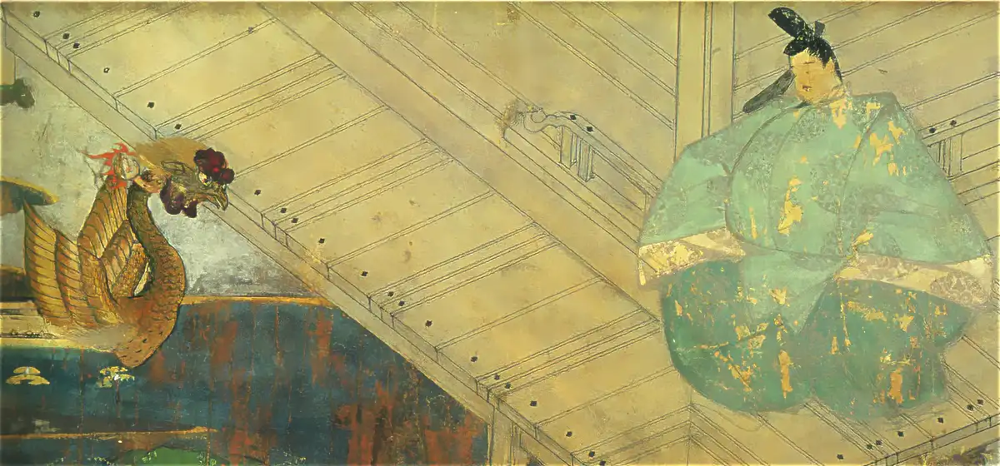

Fujiwara no Michinaga and
the Full-Moon Poem

Fujiwara no Michinaga took real control of the government in the mid-Heian period and brought regency government (sekkan seiji) by the Fujiwara clan to its height. By making his daughters the consorts of one emperor after another and leading the court as the emperors' maternal grandfather, he gained power that was close to the very top of his time.
Around his daughter Akiko, women's literature flourished. The court culture in which mid-Heian poets later chosen for the Hyakunin Isshu, such as Murasaki Shikibu and Izumi Shikibu, were active also developed greatly in Michinaga's time.
Best known as a symbol of that glory is the "Full-Moon Poem" (Mochizuki no uta). It has been handed down to later ages as a poem Michinaga composed as if to symbolize his own power.
Using this poem as a guide, let us trace what the court was like at the time.
In Japanese
この世をば 我が世とぞ思ふ 望月の
欠けたることも なしと思へば konoyooba wagayotozoomofu mochizukino
kaketarukotomo nashitoomoheba From the Shōyūki
In English
This world, I think, is my world.
Like the full moon with nothing missing,
everything is complete.
So how did Michinaga come to hold such power?
Michinaga Was Not Expected to Head the Family
Fujiwara no Michinaga was born a son of Fujiwara no Kaneie. Because he was the fifth son, however, he was not at first thought of as the one who would inherit the headship of the family. Kaneie intended to make his eldest son, Michitaka, his heir, and Michinaga also had the elder brothers Michitsuna, Michikane, and Michiyoshi. Michinaga was, however, the third son of Tokihime, Kaneie's principal wife, so even though he was the fifth son, he is thought to have effectively been in the position of a third son.
How Michinaga Came to Power
His eldest brother, Michitaka, served as Kampaku and, while still alive, eagerly promoted his heir, Korechika. Korechika became Palace Minister at 21; though eight years younger than Michinaga, he already held a higher position than Michinaga. When Michitaka caught an epidemic disease and sensed that he was dying, he asked Emperor Ichijō to make Korechika Kampaku. The emperor gave Korechika powers close to those of a Kampaku, on the condition that this would last only while Michitaka was ill.
Then Michitaka and his next brother, Michikane, died one after the other, and with the strong backing of his elder sister, Fujiwara no Senshi, the role suddenly fell to Michinaga: he was given the post of nairan and became Minister of the Right. Nairan was a position next to Kampaku and carried very great power.
The Fall of His Rival, Korechika
Even after Michinaga took power, Fujiwara no Korechika, heir of his eldest brother Michitaka, remained a strong rival. After Michitaka's death, Korechika was ambitious enough to appeal directly to Emperor Ichijō to make him Kampaku. But Korechika, together with his younger brother Takaie, caused an incident in which arrows were shot at the ox carriage of the Cloistered Emperor Kazan, and so brought about his own downfall. Michinaga seized this chance and succeeded in pushing his political rival Korechika out of government.
His Daughter Akiko Is Made Chūgū
In 999, Michinaga sent his daughter Akiko, then 12, to the court of Emperor Ichijō as a consort (nyōgo). Emperor Ichijō already had a chūgū (empress), Teishi, but the following year Michinaga raised Teishi to kōgō and made Akiko chūgū.
Originally, chūgū and kōgō meant the same thing, but by using the two titles separately, Michinaga created an unprecedented situation called "one emperor, two empresses" (ittei nikō), in which a single emperor had two empresses.
Michinaga Ignored Emperor Ichijō's Wishes
In 999, the year Akiko entered Emperor Ichijō's court, Teishi gave birth to Prince Atsuyasu. As the emperor's first son, Prince Atsuyasu was expected to be named crown prince, but Michinaga's political power greatly reduced his chances.
Instead of Prince Atsuyasu, Michinaga had Prince Atsuhira, born to his daughter Akiko, named crown prince, and strengthened his power as a maternal relative of the imperial family. Emperor Ichijō's wish to make Atsuyasu crown prince was ignored. Akiko was a gentle person, but it is said that this was the one time she raised her voice in protest against her father, Michinaga.
His Daughter Kenshi Is Made Chūgū
In 1011, when Emperor Ichijō stepped down because of illness, Emperor Sanjō, then 36, took the throne. Emperor Sanjō dearly loved a consort named Seishi, but in 1012 Michinaga made his own daughter Kenshi the chūgū of Emperor Sanjō. In response, Emperor Sanjō made Seishi kōgō.
The Feud Between Michinaga and Emperor Sanjō
Because Emperor Sanjō made Seishi kōgō against Michinaga's wishes, conflict arose between the two. Seishi's father, Fujiwara no Naritoki, had already died, and her only guardian was Fujiwara no Michitō. Michitō had only just been promoted to Councillor (sangi) and ranked lowest among the court nobles. At the time it was very rare for anyone but a minister's daughter to become empress, and Emperor Sanjō's decision to make Seishi kōgō did not win the support of the nobles either.
In this situation, Kenshi gave birth in 1013, but the child was a daughter, Princess Yoshiko. If a son had been born, Michinaga would have secured his position as the emperor's maternal relative, and his relationship with Emperor Sanjō might have improved. But Kenshi never had a son, and Emperor Sanjō is thought to have lost much of his political value to Michinaga.
Michinaga Forces Emperor Sanjō to Step Down
In 1014, Emperor Sanjō suffered from an eye disease and is said to have taken kin'ekitan, a medicine believed to give eternal youth and long life. This medicine contained mercury and other substances, and is said to have made his condition worse instead. On top of this, the inner palace burned down in both 1014 and 1015, and besides the suffering of his illness, Emperor Sanjō was under great strain.
In these hard circumstances, Michinaga pressed Emperor Sanjō to step down, citing his failing eyesight. In 1016, Emperor Sanjō stepped down on the condition that his own son, Prince Atsuakira, be made crown prince.
Michinaga Breaks His Promise to Emperor Sanjō
In exchange for getting Emperor Sanjō to agree to step down, Michinaga had promised to make Prince Atsuakira crown prince. But he did not hand over the Tsubokiri sword, which was supposed to be passed down to the crown prince, putting silent pressure on him. Seeing the situation around him, Prince Atsuakira judged that it would be difficult for him ever to take the throne, and in 1017 he asked on his own to give up his position as crown prince.
His Daughter Ishi Is Made Chūgū
In 1018, Michinaga sent his daughter Ishi to the court of Emperor Go-Ichijō and made her chūgū that same year. With this, Akiko was grand empress dowager, Kenshi was empress dowager, and Ishi was chūgū (empress): Michinaga had made all three empresses his own daughters.
The True Meaning of the Full-Moon Poem
At this point, all three of Michinaga's daughters had become empresses, and Fujiwara regency government was at its very peak.
In 1018, at the banquet held on the day Ishi was installed as chūgū of Emperor Go-Ichijō, Michinaga composed a poem that would be handed down to later ages. For a long time, this poem was told as a symbol of a powerful man's arrogance.
In recent years, however, another interpretation has been put forward: that kono yo ("this world") also means "this night," and that the poem likens his daughters who had become empresses to the full moon, while also playing on the sake cups (sakazuki) held by the court nobles.
In other words, Michinaga may have composed this poem to call on the nobles for their cooperation, meaning: "My three daughters have all become empresses. Not one of you nobles sharing cups with me is missing. So please, all of you, support my daughters."
Michinaga's Daughters Who Became Empresses
The ages in the table below are those of Michinaga's daughters when they were made chūgū. Because they were married off without regard to their own wishes, some were married at a surprisingly young age.
| Michinaga's daughter | Married to | Michinaga's grandchildren |
| Akiko (age 12) |
Emperor Ichijō (age 21) |
Emperor Go-Ichijō Emperor Go-Suzaku |
| Kenshi (age 18) |
Emperor Sanjō (age 35) |
Princess Yoshiko |
| Ishi (age 19) |
Emperor Go-Ichijō (age 11) |
Princess Shōshi Princess Keishi |
Politics After Michinaga's Death
In 1017, Michinaga handed the post of regent (sesshō) to his heir, Yorimichi. At 17, Yorimichi married Princess Takahime (a daughter of Prince Tomohira, a son of Emperor Murakami), but they had no children. It is said that when Emperor Sanjō once offered to marry his daughter, Princess Shishi, to Yorimichi, Yorimichi hesitated because he did not want to make Takahime sad. In the end, he did not take Princess Shishi as his wife. He also adopted Genshi, a daughter of Prince Atsuyasu, and sent her to the court of Emperor Go-Suzaku in 1036, but no prince was born. Fujiwara no Kanshi, his daughter by Fujiwara no Gishi, was also sent to the court of Emperor Go-Reizei in 1050, but once again no prince was born. Then, in 1068, Emperor Go-Sanjō, who had no Fujiwara maternal relatives, took the throne. Emperor Go-Sanjō issued the Enkyū Estate Regulation Edict (Enkyū no shōen seiri-rei) and pushed through a reform of the estate (shōen) system. At the time, many farmers donated their land to the powerful Fujiwara to escape harsh tax collection. From that land the Fujiwara took a fee for the use of their name, smaller than the tax would have been, and made enormous profits. Emperor Go-Sanjō sorted out such estates, reformed the system so that taxes would be paid properly, and took back the court's power from the Fujiwara regent family, bringing the golden age of the regents to an end. Ironically, Emperor Go-Sanjō was the son of Princess Yoshiko, the daughter of Michinaga's daughter Kenshi and Emperor Sanjō. Michinaga would surely have been disappointed if he had known.
Afterword
Fujiwara no Michinaga is known as the man who composed the Full-Moon Poem and showed off his power, but it is said that on the road to securing that power he often fell ill and lived in fear of curses. Regency government also depended on luck, and however secure it looked, a time of decline was bound to come.
If Michinaga put into the Full-Moon Poem the wish that "the nobles would support my three daughters," then the poem may have been not the arrogance of a powerful man but an earnest expression of his anxiety. Even in the heart of Michinaga, who had reached the height of power, worries about the future may never have ended. Perhaps he was thinking about how politics would go after his death, and wishing that his beloved daughters could live in peace.
Fujiwara no Michinaga's Family Chart
Michinaga's Timeline
Michinaga Is Born
He was born the fifth son of Fujiwara no Kaneie. His mother was Tokihime, Kaneie's principal wife.
Given Junior Fifth Rank, Lower Grade at 15
The Kanna Incident
Through the schemes of his father, Fujiwara no Kaneie, Emperor Kazan became a monk and Emperor Ichijō took the throne.
At 22, Given Junior Third Rank and
Becomes a Court Noble
That year, Michinaga married Minamoto no Tomoko, daughter of the Minister of the Left, Minamoto no Masanobu.
Appointed Acting Middle Counselor at 23
That year, Akiko was born to Michinaga and Tomoko.
Appointed Acting Upper Counselor at 26
Ordered to Serve as Nairan at 30
His elder brother Michitaka, who had inherited the headship of the family and served as Kampaku, died, and his brother Michikane, who became Kampaku in his place, soon died as well. The role fell to Michinaga, the fifth son: he was ordered to serve as nairan, became Minister of the Right and head of the clan (uji no chōja), and became the most powerful man at court.
The Chōtoku Incident
His rival, his nephew Korechika, together with his younger brother Takaie, caused an incident in which arrows were shot at the ox carriage of the Cloistered Emperor Kazan, and fell from power. Michinaga, meanwhile, was promoted to Minister of the Left.
His Daughter Akiko Enters
Emperor Ichijō's Court at 12
The next year, Michinaga had Akiko made chūgū, and Michitaka's daughter Teishi became kōgō.
Emperor Ichijō and Teishi had a son, Prince Atsuyasu, but because Teishi had given birth after becoming a nun, the nobles did not welcome him.
Teishi, Emperor Ichijō's Empress,
Dies at 24
Prince Atsuyasu was to be raised by Teishi's younger sister, Mikushigedono, but she died while carrying Emperor Ichijō's child. The next year, the raising of Prince Atsuyasu was entrusted to Michinaga's daughter Akiko.
Prince Atsuhira (Later Emperor Go-Ichijō) Is Born
to Emperor Ichijō and Akiko
Prince Atsunaga (Later Emperor Go-Suzaku) Is Born
to Emperor Ichijō and Akiko
His Daughter Kenshi Enters the Court of
Prince Iyasada (Later Emperor Sanjō)
The next year, Emperor Sanjō took the throne at 36.
Emperor Go-Ichijō Takes the Throne
Michinaga was appointed regent (sesshō).
Resigns as Regent at 52 and
Becomes Grand Minister
His Daughter Ishi Enters
Emperor Go-Ichijō's Court
He made all three empresses his own daughters: Akiko as grand empress dowager, Kenshi as empress dowager, and Ishi as chūgū (empress). At the banquet celebrating Ishi's installation, Michinaga composed the poem "Kono yo o ba...".
Becomes a Monk at 54
Dies at 62
Glossary
- Shōyūki
- The diary of the Heian court noble Fujiwara no Sanesuke. Its name comes from his common title, Ono-no-miya Udaijin (Minister of the Right of Ono-no-miya). It records politics, society, and ceremonies over about 60 years of the mid-Heian period, and is an important source for understanding what the court was really like. The Full-Moon Poem is recorded in the Shōyūki.
- Regency government (sekkan seiji)
- Marrying one's daughter to the emperor and having her bear a future emperor, so as to become the emperor's maternal relative (gaiseki), deepen ties with the imperial family, and govern in the emperor's place.
- Nairan
- A position next to Kampaku. Its holder assisted the emperor by, for example, reading in advance the documents presented to the emperor and the documents the emperor approved.
- Uji no chōja
- The head of a clan.
- One emperor, two empresses (ittei nikō)
- A state in which one emperor had two principal wives at the same time. Fujiwara no Michinaga brought it about by using separately the titles chūgū and kōgō, which originally meant the same thing.
- Enkyū Estate Regulation Edict
- A law issued by Emperor Go-Sanjō to sort out the estates (shōen) that formed the economic base of the Fujiwara and the great temples and shrines, with the aim of strengthening the emperor's power and the state's finances.